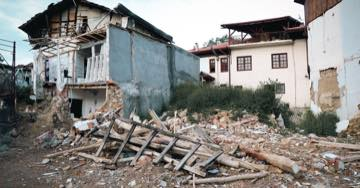
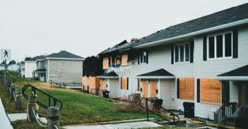
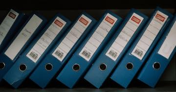
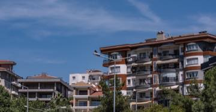
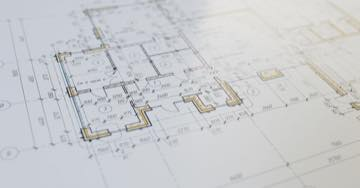
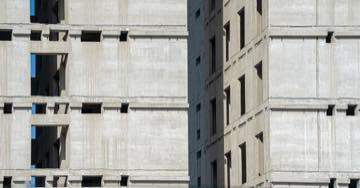

Rehber
Deprem hakları rehberi: haklar, süreler ve başvuru yolları
Her yazı tek bir soruya cevap verir: hakkınız ne, süresi kaç gün, nereye başvuracaksınız ve hangi kanuna dayanıyor. Ücretsiz, reklamsız, kayıt gerektirmez.
Deprem sonrası ilk günler
Deprem olduktan sonraki ilk haftalarda süresi işleyen haklar.

Depremden sonra ilk 30 gün: hangi hakkın süresi ne zaman doluyor? Deprem sonrasında kaybedilen hakların çoğu bilinmediği için değil, süresi kaçtığı için kaybediliyor. İşte gün gün yapılması gerekenler. Hasar tespit raporuna itiraz nasıl yapılır? 30 günlük süre ve dilekçe
Binanızın hasar derecesi yanlış belirlendiyse itiraz süresi ilan tarihinden itibaren 30 gün. Kaçarsa idari itiraz hakkı tümüyle biter.
Hasar tespit raporuna itiraz nasıl yapılır? 30 günlük süre ve dilekçe
Binanızın hasar derecesi yanlış belirlendiyse itiraz süresi ilan tarihinden itibaren 30 gün. Kaçarsa idari itiraz hakkı tümüyle biter.

DASK hasar ihbarı nasıl yapılır? 15 günlük süre, %2 muafiyet ve 72 saat kuralı Depremden sonra DASK hasar ihbarı için süre 15 gün. İhbar kanalları, eksper süreci, %2 muafiyet ve ödemenin nasıl hesaplandığı. Hasarlı binadan eşya alınabilir mi? Kurallar ve kimsenin söylemediği tuzak Yıkık ve acil yıktırılacak yapılara girmek yasak. Ağır hasarlı binada eşya alımı ise pratikte 30 günlük itiraz hakkınızla çakışıyor.
Cenaze bulunamadıysa ölüm nüfusa nasıl işlenir? Ölüm karinesi, gaiplik ve miras Enkazda kaybolan kişi, cesedi bulunamasa bile ölmüş sayılabilir. Bu, mahkeme kararı gerektirmez ve mirası hemen açar. Gaiplikten farkı budur.DASK ve sigorta
Zorunlu deprem sigortasının kapsamı, muafiyeti ve uyuşmazlık yolları.
 DASK neleri karşılamaz? Eşya, enkaz, kira ve can kaybı teminat dışıdır
DASK binanızı sigortalar, hayatınızı değil. Ev eşyası, enkaz kaldırma, alternatif konaklama, kira kaybı ve ölüm dâhil bedeni zararlar kapsam dışıdır.
DASK neleri karşılamaz? Eşya, enkaz, kira ve can kaybı teminat dışıdır
DASK binanızı sigortalar, hayatınızı değil. Ev eşyası, enkaz kaldırma, alternatif konaklama, kira kaybı ve ölüm dâhil bedeni zararlar kapsam dışıdır.
 DASK'ım yeterli mi? Sigorta bedeli, azami teminat ve eksik sigorta tuzağı
DASK'ın ödeyeceği tutar konutunuzun piyasa değeri değildir. Bedel metrekareyle hesaplanır, azami teminatla sınırlıdır ve muafiyet düşülür.
DASK'ım yeterli mi? Sigorta bedeli, azami teminat ve eksik sigorta tuzağı
DASK'ın ödeyeceği tutar konutunuzun piyasa değeri değildir. Bedel metrekareyle hesaplanır, azami teminatla sınırlıdır ve muafiyet düşülür.

DASK'ım yoksa ne olur? Asıl kayıp ceza değil, devlet desteğini kaybetmektir Zorunlu deprem sigortası bulunmayanlara devlet konut yardımı veya kredi ödenmediği belirtilmektedir. DASK'ın asıl karşılığı budur. Eksper raporu son söz değildir: itiraz, ikinci eksper ve hakem eksper Sigorta ödemesini az bulanların çoğu doğrudan mahkemeyi düşünüyor. Arada çok daha hızlı üç basamak var: itiraz, ikinci eksper, hakem eksper. Sigortayla uyuşmazlık: önce yazılı başvuru, sonra Tahkim mi mahkeme mi? Sigorta şirketine yazılı başvuru yapmadan Tahkim'e veya mahkemeye gidilemez; bu bir dava şartıdır. Yol seçimi ise geri dönüşsüzdür.Kiracı hakları
Sistem mülkiyet üzerine kurulu; kiracının elinde kalan haklar.
 Kiracının deprem hakları: tazminat davası için tapu sahibi olmanız gerekmez
DASK malike öder, hak sahipliği tapu arar, afet konutu malike verilir. Ama tazminat davasında mülkiyet şartı yoktur — kiracının en güçlü hakkı budur.
Evim hasarlı: kira ödemeye devam edecek miyim? Fesih, indirim ve depozito
Ağır hasar kira ilişkisini çekilmez kılan önemli sebep sayılabilir. Bina tamamen yıkıldıysa ifa imkânsızlığı gündeme gelir.
Kiracının deprem hakları: tazminat davası için tapu sahibi olmanız gerekmez
DASK malike öder, hak sahipliği tapu arar, afet konutu malike verilir. Ama tazminat davasında mülkiyet şartı yoktur — kiracının en güçlü hakkı budur.
Evim hasarlı: kira ödemeye devam edecek miyim? Fesih, indirim ve depozito
Ağır hasar kira ilişkisini çekilmez kılan önemli sebep sayılabilir. Bina tamamen yıkıldıysa ifa imkânsızlığı gündeme gelir.
Devlet desteği ve mülkiyet
Hak sahipliği, afet konutu, vergi ve yeniden inşa süreci.
 Hak sahipliği başvurusu: iki aylık süre, taahhütname ve faizsiz borçlandırma
Binası yıkılan veya ağır hasarlı malikler devletten konut ya da faizsiz kredi isteyebilir. Başvuru süresi ilan tarihinden itibaren iki aydır.
Hak sahipliği başvurusu: iki aylık süre, taahhütname ve faizsiz borçlandırma
Binası yıkılan veya ağır hasarlı malikler devletten konut ya da faizsiz kredi isteyebilir. Başvuru süresi ilan tarihinden itibaren iki aydır.

Bina yıkıldıktan sonra mülkiyet ne oluyor? Kat mülkiyeti, arsa payı ve yeniden inşa Ana yapı tamamen yıkılırsa kat mülkiyeti sona erer; geriye arsa payı oranında paylı mülkiyet kalır. Yeni dairenizin büyüklüğünü bu oran belirler. Deprem sonrası vergi: mücbir sebep, terkin ve yıkılan binanın emlak vergisi Deprem mücbir sebep hâlidir ve süreler işlemez. Yıkılan bina için emlak vergisi mükellefiyeti ise çoğu zaman bildirime bağlı olarak sona erer.Dava yolları
Müteahhit, yapı denetim kuruluşu ve idare karşısındaki sorumluluk.
 Müteahhidin sorumluluğu: ağır kusur varsa zamanaşımı 20 yıl
Binanın depremde yıkılması hukuken ayıplı ifadır. Taşınmaz yapılarda zamanaşımı beş yıl, yüklenicinin ağır kusuru varsa yirmi yıldır.
Müteahhidin sorumluluğu: ağır kusur varsa zamanaşımı 20 yıl
Binanın depremde yıkılması hukuken ayıplı ifadır. Taşınmaz yapılarda zamanaşımı beş yıl, yüklenicinin ağır kusuru varsa yirmi yıldır.
 Belediyeye ve yapı denetime dava: deprem her zaman mücbir sebep değildir
Deprem kuşağındaki bölgelerde depremin mücbir sebep sayılamayacağı kabul ediliyor. Bu, idarenin 'elimden bir şey gelmezdi' savunmasını kıran ilkedir.
Belediyeye ve yapı denetime dava: deprem her zaman mücbir sebep değildir
Deprem kuşağındaki bölgelerde depremin mücbir sebep sayılamayacağı kabul ediliyor. Bu, idarenin 'elimden bir şey gelmezdi' savunmasını kıran ilkedir.
Deprem öncesi
Deprem olmadan önce kullanılabilecek, en az bilinen haklar.
 Riskli yapı tespiti nasıl yaptırılır? Komşularınızın onayı gerekmiyor
Riskli yapı tespiti için diğer maliklerin onayı gerekmez. Tek bir kat maliki, masrafı kendisine ait olmak üzere tüm binanın tespitini yaptırabilir.
Riskli yapı tespiti nasıl yaptırılır? Komşularınızın onayı gerekmiyor
Riskli yapı tespiti için diğer maliklerin onayı gerekmez. Tek bir kat maliki, masrafı kendisine ait olmak üzere tüm binanın tespitini yaptırabilir.

İmar barışı ve Yapı Kayıt Belgesi: binanız yasallaştı ama güvenli olmadı Yapı Kayıt Belgesi, binanın depreme dayanıklı olduğunu göstermez ve maliki sorumluluktan kurtarmaz. Sorumluluk açıkça malike bırakılmıştır. Binanız hangi deprem yönetmeliği döneminde yapıldı? Belgeleri nasıl alırsınız? Bina yaşı, dayanıklılık hakkında kaba ama anlamlı bir göstergedir. Ruhsat, iskân ve zemin etüdü raporu bilgi edinme yoluyla istenebilir.Hesaplayan araçlar
Yazılar bilgiyi anlatır; araçlar sizin durumunuza uygular.
Süre takvimiTarihlerinizi girin, hangi hakkınızın kaç günü kaldığını görün. HaklarımÜç soru cevaplayın, durumunuza uyan hakları listeleyelim. Sigorta açığı hesabıDASK ne kadarını karşılıyor, ne kadarı size kalıyor? Dilekçe hazırlaHazır şablonu doldurun, nereye göndereceğinizi öğrenin.RSS akışı · 20 yazı · Son güncelleme: 15 Ağustos 2026
Fotoğraflar: Pexels (her yazının altında fotoğrafçı künyesi vardır) · Şemalar: Deprem Haklarım. Görseller siteye indirilmiştir; sayfa hiçbir dış istek yapmaz.